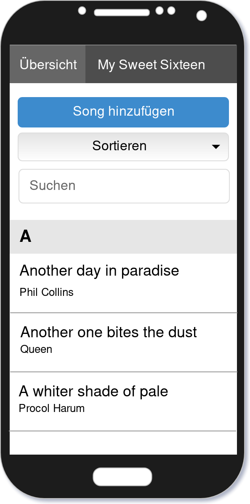
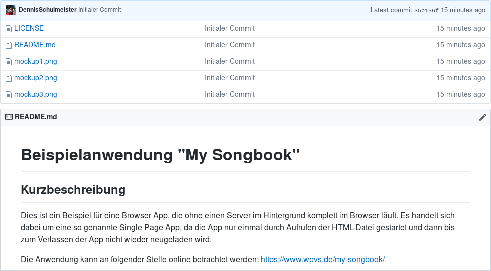
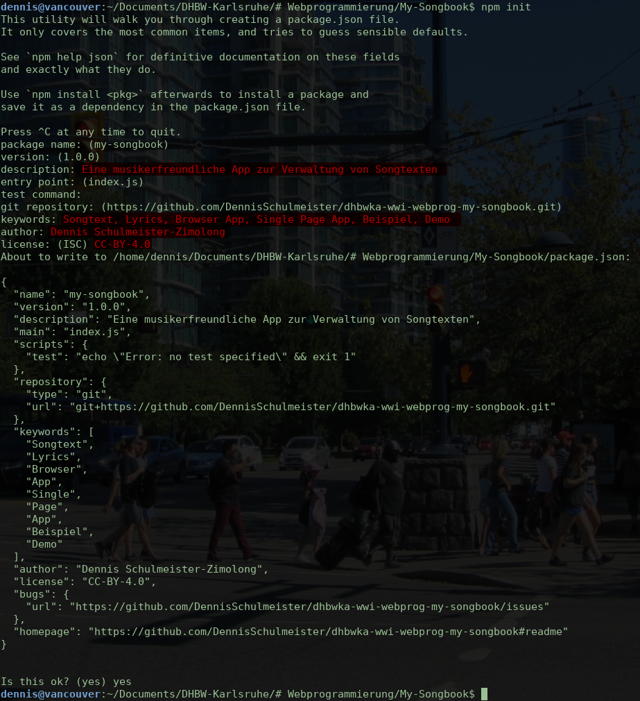

Puh, das wäre geschafft. Das dritte Semester ist nun halb vorbei und du hast hoffentlich
alle Selbstlerneinheiten erfolgreich hinter dir gelassen. Es war auch eine ganze Menge
Zeugs, das du dir da angeeignet hast. Das ein oder andere haben wir schon in kleineren
Übungen vertieft und praktisch angewendet. Jetzt wird es aber Zeit, die ganzen Puzzleteile
zu einem Gesamtwerk zusammenzusetzen. Es wird Zeit, dass wir endlich einmal eine komplette
Webanwendung programmieren, mit allem was dazu gehört. Diese Anleitung soll dir dabei helfen.
Zwar werden wir die wesentlichen Teile daraus auch in der Vorlesung besprechen, hier kannst
du aber nochmal jeden Schritt nachvollziehen und dir dabei auch die Dinge anschauen, die wir
in der Vorlesung nicht so ausführlich erklären oder aus Zeitgründen überspringen müssen.
Falls du über Google auf diese Seite gelangt bist und dich nun fragst, was mit alle dem
hier gemeint ist, mach dir keine weiteren Gedanken darüber. Diese Anleitung ist Bestandteil
der Vorlesung „Webprogrammierung” im Bachelor-Studiengang „Wirtschaftsinformatik” an der
DHBW Karlsruhe. Dort lernen wir
erst gemeinsam die grundlegenden Konzepte der Webentwicklung wie HTML, CSS und JavaScript
und gehen dann in einen praktischen Teil zur Entwicklung einer Browser App über. Ganz
ohne Vorwissen wird dir diese Anleitung daher nicht viel nutzen. Sämtliche Selbstlerneinheiten
aus der Vorlesung sind jedoch auf wpvs.de verfügbar.
Was wir programmieren werden
Die Anwendung, die wir gemeinsam entwickeln, nennt sich „My Songbook” und ist eine
browserseitige Single Page App. Sie hat also keinen Serveranteil, da sich die gesamte
Anwendungslogik innerhalb des Browsers abspielt. Lediglich einen Webserver, der die
Anwendung über das Web aufrufbar macht, werden wir dabei verwenden. Der Server wird
jedoch nur den statischen Quellcode der Anwendung zur Verfüfung stellen und selbst
keinerlei Intelligenz besitzen.
„My Songbook” soll eine einfache, musikerfreundliche App werden, die es ermöglicht,
Songtexte im Internet zu suchen und diese in sein persönliches Songbuch aufzunehmen.
Hierfür soll es eine Übersichtsseite mit allen bereites enthaltenen Songtexten geben,
wobei die Liste entweder nach Songtitel oder nach Interpret sortiert werden kann.
Auch soll es möglich sein, die Liste zu durchsuchen. Darüber hinaus können die
vorhandenen Songtexte angezeigt, bearbeitet und gelöscht werden. Die nachfolgenden
Skizzen zeigen, wie die Anwendung ungefähr aussehen soll. Wie du siehst, wollen wir
die Anwendung nach dem „Mobile First”-Ansatz responsive gestalten, so dass sie auch
auf Smartphones und Tablets genutzt werden kann:

Mobile Darstellung
Beim Start der Anwendung soll eine Übersicht mit allen Songtexten erscheinen.
Der Anwender kann hier entscheiden, ob die Liste nach Titel oder nach Interpret
sortiert sein soll und innerhalb der Liste suchen. Ebenso kann er von hier aus
einen neuen Song anlegen oder einen vorhandenen Song aufrufen:
Übersicht der vorhandenen Songtexte
Zu jedem Songtext gibt es eine Detailseite zur Anzeige des Textes. Sie soll ungefähr
wie folgt aussehen. Von hier aus kann der Text auch bearbeitet oder gelöscht werden:
Anzeige eines Songtexts
Klickt der Anwender auf „Bearbeiten” soll sich die Seite wie folgt verändern:
Titel und Interpret werden zu eingabebereiten Feldern und der Text kann innerhalb
eines WYSIWYG-Editors verändert werden. Über zwei Buttons kann der Anwender dann
entscheiden, ob er die Änderungen sichern oder wieder verwerfen will:
Bearbeiten eines Songtexts
Bevor ein Text gelöscht wird, soll ein Popup mit einer Sicherheitsabfrage erscheinen:
Löschen eines Songtexts
Will der Anwender einen neuen Songtext hinzufügen, soll ein Popup mit zwei
Suchfeldern für Songtitel und Interpret hochkommen. Sobald der Anwender den Popup
bestätigt, wirrd die Suche durchgeführt und der Text wird angelegt. Möglicherweise
bleibt der Text dabei leer, wenn er nicht online gefunden wurde. In diesem Fall
soll der Anwender ihn von Hand eingeben können:
Anlegen eines Songtexts
So simpel die zu erstellende Anwendung ist, so kompliziert ist sie auch. Denn manche scheinbar
triviale Dinge sind am Ende doch aufwändiger als man zunächst denkt. Wann immer das passiert,
werden wir nicht lange versuchen, das Rad neuzuerfinden. Denn Open Source und Free Software
zum Dank müssen wir das auch gar nicht. Im Internet hat sich eine ausgeprägte Sharing-Kultur herausgebildet,
so dass es für viele Probleme bereits fertige Werkzeuge und Bibliotheken gibt, die wir nur zu nutzen
brauchen. Wäre doch schade, wenn wir das nicht nutzen würden. Wir müssen dabei auch gar kein
schlechtes Gewissen haben, da heutzutage kaum ein echtes Projekt ohne diese Art der Hilfestellung auskommt.
Im Gegenteil: Es gibt sogar eigene Werkzeuge, die die Nutzung fremder Werkzeuge und Bibliohekten so
einfach machen, dass ihre Nutzung inzwischen zum guten Ton gehört.
Entwicklungswerkzeuge
Atom: Spezieller Texteditor für Webentwickler und Programmierer
git: Versionsverwaltung zur gemeinsamen Arbeit am Quellcode
npm: Paketverwaltung zum automatischen Download abhängiger Bibliotheken
Parcel: Web Application Bundler und Entwicklungsserver
Parcel installieren wir ihm Rahmen dieser Anleitung als lokale Abhängigkeit für unser Projekt.
In der Anleitung zur Installation der Software
ist es daher nicht aufgeführt und du musst hier noch nichts unternehmen.
Bibliotheken
Navigo: Single Page Router zur Vereinfachung der Navigation innerhalb der App
PouchDB: Clientseitige NoSQL-Datenbank zum Speichern der Songtexte
lyric-get: Kleine Bibliothek zur Suche von Songtexten im Internet
Quill: WYSIWYG-Editor zum Nachbearbeiten der Songtexte
Wenn du willst, kannst du dich auf den einzelnen Webseiten ein wenig umschauen und dir ein Bild davon
verschaffen, was die Werkzeuge leisten und wie die Bibliotheken genutzt werden. Doch keine Angst, wenn
das jetzt alles sehr kompliziert aussieht. Wir werden hier alles Schritt für Schritt durchgehen und
alle wichtigsten Dinge erklären.
Eventuell ist dir aber aufgefallen, dass wir kein bekanntes Framework wie
Angular oder
React nutzen.
Der Grund hierfür ist, dass das für unsere kleine Anwendung gar nicht erforderlich ist. Diese
Frameworks sind viel zu groß, als dass sich ihr Einsatz hier lohnen würde. Viel problematischer
ist jedoch, dass sie jeweils eine ganz eigene Art der Entwicklung vorschreiben, die zwar zum
jeweiligen Framework passt, aber nur schwer verallgemeinert werden kann. Auch nehmen Sie uns
viele Aufgaben ab, auf die wir in dieser Anleitung bewusst eingehen wollen, um dir ihre
Bedeutung vor Augen zu führen. Für unser Projekt haben wir uns deshalb entschieden, nur kleine
Bibliotheken zu nutzen, die genau ein Problem lösen, sonst aber alles selbst zu programmieren.
Auch das ist ein durchaus praxisrelevanter Weg, weil wir dadurch eine sehr schlanke, genau auf
unsere Bedürfnisse zugeschnittene Codebasis mit geringer Codekomplexität erhalten.
Folgende Dinge solltest du bereits erledigt haben
Wenn du an dieser Stelle angekommen bist, gehen wir davon aus, dass du folgende Dinge bereits
erledigt hast. Wenn nicht, hole sie jetzt schnell nach, damit wir loslegen können.
Diese Anleitung führt dich Schritt für Schritt durch das Programmierprojekt.
Du solltest sie deshalb nutzen, um die in der Vorlesung besprochenen Inhalte
zu wiederholen und zu vertiefen. Es handelt sich allerdings nur bedingt um eine
gute Bettlektüre. Stattdessen gehen wir davon aus, dass du alle Schritte
genau wie beschrieben auf deinem eigenen Rechner nachvollziehst. Mitmachen ist
strengstens erw√ºnscht. üòé
Solltest du an einer Stelle nicht weiter kommen oder noch eine Frage haben,
nutze das Forum in Moodle, um Hilfe zu erhalten. Wir antworten auf jede Frage!
Außerhalb des Semesters kannst du natürlich auch einfach eine E-Mail schreiben.
Die Adresse findest du ganz unten am Ende der Seite. Alternativ kann auhc ein
Blick in den fertigen Quellcode weiterhelfen. Du findest die komplett fertig
gebaute App an folgender Stelle:
Wenn du mit mehreren Personen an dem Projekt arbeiten willst, muss nur einer
von euch die nachfolgenden Schritte ausführen. Dabei solltet ihr aber
jeden Fall wie beschrieben ein git-Repository anlegen, damit ihr den Quellcode
untereinander teilen könnt.
Anlage des Projektverzeichnisses
In dieser Anleitung fangen wir wirklich ganz von vorne an. Als erstes musst du daher erst ein
neues Verzeichnis anlegen, in dem wir die Webanwendung entwickeln werden. Am Besten legst du
dir hierfür ein allgemeines Verzeichnis für all deine Programmierprojekte an, wenn du noch
keins hast, und erstellst darin ein Unterverzeichnis namens „My-Songbook”.¹ Dieses Unterverzeichnis
wird später alle Dateien beinhalten, die während der Entwicklung der App entstehen.
Es beginnt alles mit einem leeren Projektverzeichnis
¹
Achte darauf, dass das Projektverzeichnis kein Leerzeichen im Namen hat. Zwar darf
das Verzeichnis, in dem es liegt, Leerzeichen beinhalten, das Projektverzeichnis
selbst jedoch nicht. Andernfalls lässt sicher weiter unten node.js nicht richtig
initialisieren.
Damit fremde Entwickler, die auf den Quellcode stoßen, wissen um was für eine Anwendung es sich
handelt und was sie mit dem Quellcode tun dürfen, ist es üblich, dass das Projektverzeichnis
zwei Textdateien mit den Namen README und LICENSE
beinhaltet. Sie enthalten eine allgemeine Beschreibung der Anwendung, wichtige Hinweise sowie die
Lizenz, unter welcher die Anwendung veröffentlicht wird. Diese beiden Dateien sind so wichtig,
dass Code-Plattformen wie GitHub ihren Inhalt auf der Projektseite direkt anzeigen.
Bei einer echten Anwendung, kann man bei der Auswahl der Lizenz und beim Schreiben der
README-Datei gar nicht gewissenhaft genug sein. An dieser Stelle
genügt es aber, wenn du dir von
GitHub
folgende Dateien herunterlädst und im Projektverzeichnis ablegst. Klicke hierfür einfach
auf die Dateinamen in der Aufzählung.
LICENSE:
Lizenzbeschreibung unserer Anwendung, hier CC-BY-4.0.
mockup1.png:
Skizze der Anwendung für die README-Datei
mockup2.png:
Skizze der Anwendung für die README-Datei
mockup3.png:
Skizze der Anwendung für die README-Datei
Dein Projektverzeichnis sollte hinterher so aussehen:
Projektverzeichnis mit README und LICENSE-Datei
Initialisierung des git-Repositories
Kaum ein Programmierprojekt kommt heute noch ohne eine gute Versionsverwaltung aus, wobei
git hier der absolute Spitzenreiter ist.
Allein schon die Möglichkeit, später noch ganz genau nachvollziehen zu können, was wann
warum und wie geändert wurde, spricht dafür, deinen Quellcode mit git zu verwalten, selbst
wenn du nur ganz alleine daran arbeiten willst. Für die Vorlesung haben wir darum extra
eine eigene Anleitung für den
Umgang mit git, GitHub und Atom zur Verfügung gestellt.
Auch an dieser Stelle wollen wir auf unser eigenes git-Repository nicht verzichten.
Im Gegensatz zur Anleitung wollen wir die notwendigen Schritte jedoch auf der Konsole
ausführen. Als nächstes musst du deshalb ein Konsolenfenster öffnen und darin mit
cd Verzeichnisname in das Projektverzeichnis wechseln.
Falls der Verzeichnispfad Leerzeichen enthält, musst du ihn in Anführungszeichen setzen.
Ob es geklappt hat, siehst du in der Regel am Verzeichnisnamen, der als Teil des
Befehlsprompt angezeigt wird. Außer unter macOS, wo du das aktuelle Verzeichnis mit
pwd überprüfen kannst. Anschließend führe folgende Befehle aus:
git init
git add . (beachte den Punkt am Ende des Befehls)
git commit
Dadurch sollte sich ein Texteditor öffnen und dich zur Eingabe einer Commit-Nachricht auffordern.
Hier kannst du dann einfach „Initialer Commit” oder „Projekt angelegt” reinschreiben und den Editor
wieder schließen. Wie du das anstellst, siehst du anhand der folgenden Screenshots:
Wenn sich ein normaler Editor öffnet, gibt die Commit-Nachricht ein, speichere und schließe den Editor.
Wenn in der Konsole folgendes erscheint, ist das der Editor
nano.
Gib deine Meldung ein und drücke Strg+O zum Sichern und dann
Strg+X zum Beenden.
Das ist Vi.
Drücke erst i, um den Insert Mode zu gelangen,
und gib dann deine Commit-Nachricht ein. Anschließend wechsle mit ESC,
: wieder zurück in den Befehlsmodus und beende den
Editor mit dem Befehl wq.
Am Ende sollte git folgende Zeilen ausgeben:
Initialisierung des git-Repositories
Dadurch kannst du jetzt aber nur lokal arbeiten. Dein Quellcode wird noch nicht mit anderen
Entwicklern geteilt. Hierfür musst du das Repository auf einen speziellen git-Server schieben,
auf den alle Projektmitglieder Zugriff haben. Üblicherweise wird hierfür einfach
GitHub genutzt,
obwohl es auch eine ganze Reihe genauso leistungsfähiger Webanwendungen zum selbst hosten gibt.
Melde dich daher nun auf GitHub an und lege dort ebenfalls ein neues Repository an. Achte dabei
aber unbedingt darauf, dass das Repository wirklich leer ist und noch keine Dateien beinhalten darf.
Wenn folgende Ansicht erscheint, hast du alles richtig gemacht:
Alles in Ordnung. Das Repository auf GitHub ist komplett leer.
Die Befehle, die du nun im Konsolenfenster eingeben musst (du hast es hoffentlich noch nicht geschlossen),
stehen unter der Überschrift … or push an existing repository from the command line.
Kopiere sie in die Zwischenablage und führe sie in der Konsole aus. Anschließend sollten deine Dateien
auch auf GitHub sichtbar sein.
Bildschirmausgabe beim Verbinden des lokalen git-Repositories mit GitHub

Hurra! Alle Dateien werden angezeigt.
Konfiguration von node.js
Da du das Konsolenfenster ohnehin schon offen hast, wollen wir an dieser Stelle gleich noch
node.js bzw. den darin enthaltenen
Node Package Manager
npm in Betrieb nehmen. Zwar ist node.js vielen nur als „JavaScript für den Server” ein Begriff,
in Wirklichkeit kann es aber auch ganz hervorragend in der Frontendentwicklung eingesetzt werden.
Denn der Node Package Manager macht es geradezu zum Kinderspiel, externe Bibliotheken und zusätzliche
Werkzeuge in unser Projekt einzubinden, weshalb sich npm inzwischen auch gegenüber allen anderen,
ähnlichen Werkzeugen als Standard durchsetzen konnte.
Die Einrichtung von npm ist zum Glück genauso einfach wie seine Benutzung. Du musst lediglich den Befehl
npm init in die Konsole eingeben und ein paar grundlegende Fragen beantworten.
Die meisten Vorschlagswerte kannst du dabei auch einfach übernehmen. Der gesamte Ablauf sollte ungefähr
so aussehen:

Initialisierung von node.js und npm
Wie das Kommando bereits ankündigt, wird dadurch eine neue Datei namens package.json
angelegt. Technisch gesehen macht sie unser Projekt zu einem node.js-Paket, das sogar auf
npmjs.com hochgeladen werden könnte. Für reine
Browser-Anwendungen ist dies jedoch vollkommen unerheblich. Alles was hier zählt ist, dass wir dadurch
npm zur Verwaltung aller externen Abhängigkeiten nutzen können.
Im Zusammenhang mit git besitzt npm jedoch auch einen kleinen Nachteil: Es legt sehr viele aus dem Internet
heruntergeladene Dateien im Projektverzeichnis ab, die wertvollen Platz innerhalb des git-Repositories belegen.
Da diese Dateien aber jederzeit wieder mit npm nachgeladen werden können, ist es weder erforderlich noch wirklich
sinnvoll, diese Dateien mit git zu verwalten. Bevor du also irgendetwas weiteres mit npm und git unternimmst,
lege erst eine Datei namens .gitignore mit folgendem Inhalt im Projektverzeichnis an:
.cache/**
/dist/**
/node_modules/**
Anschließend führe einen neuen Add-Commit-Push-Zyklus aus, um deine Änderungen zu versionieren:
git add . (beachte den Punkt am Ende des Befehls)
git commit
git push
Das Projektverzeichnis steht nun bereit und wartet darauf, von uns mit Quellcode gefüllt zu werden.
Häufige Aufgaben automatisieren
Wie wir bisher in der Vorlesung gesehen haben, braucht es im Grunde genommen keinerlei
Werkzeuge, um mit der Entwicklung von Webanwendungen zu beginnen: Ein einfacher Texteditor
und ein Verzeichnis zur Ablage der Quellcodes reichen für kleine Projekte bereits völlig aus.
Je größer oder professioneller ein Projekt jedoch wird, desto mehr stößt dieser einfache
Ansatz an seine Grenzen, da einfach viel zu viele Aufgaben immer wieder von Hand erledigt
werden müssen:
Externe Bibliotheken müssen bei jeder Aktualisierung manuell heruntergeladen und innerhalb
des Projektverzeichnisses abgelegt werden.
Prüfwerkzeuge, welche die Qualität des Codes überprüfen sollen, müssen in regelmäßigen Abständen
ausgeführt werden, bevor eine neue Version der Anwendung online gestellt wird.
Komplexe Stylesheets müssen erst durch so genannte CSS-Preprozessoren bearbeitet werden, um die
tatsächlichen CSS-Dateien zu erzeugen.
Falls eine Sprache wie TypeScript oder eine besonders neue JavaScript-Version, die noch
nicht von allen Browsern unterstützt wird, zum Einsatz kommt, müssen die entsprechenden
Quellcdes erst durch einen Transpiler in reguläres JavaScript übersetzt werden.
HTML-, CSS- und JavaScript-Codes müssen durch Minifier unleserlich gemacht und um alle
überflüssigen Bytes abgespeckt werden.
Bilder müssen in ihrer Größe reduziert und für schnelle Ladezeiten optimiert werden.
Seit geraumer Zeit hat sich daher die Verwendung so genannter „Task Runner” wie Grunt
oder Gulp durchgesetzt, die all diese Schritte wie eine Fertigungsstraße automatisieren.
Es handelt sich dabei im Grunde genommen um das JavaScript-Pendant zu den Build-Werkzeugen
anderer Sprachen, wie zum Beispiel Ant und Maven für Java oder Make und Meson für C/C++.
Denn sie ermöglichen es uns, ganz exakte Abläufe zu definieren und dabei festzulegen, bei
Eintreten welcher Bedingung welche Aktion auszuführen ist. Leider sind sie deshalb aber
auch nicht unbedingt einsteigerfreundlich, da sie erst relativ aufwendig konfiguriert werden
müssen, bevor sie überhaupt etwas sinnvolles tun.
JavaScript gestern, heute, morgen
Aufgrund seiner langen Historie als einfache Skriptsprache für das Web hat JavaScript einen
entscheidenen Nachteil, der bei der Entwicklung großer Anwendungen wirklich ins Gewicht fällt:
Es gibt keine saubere Trennung zwischen den Quellcodedateien. Oder anders ausgedrückt:
JavaScript hat (oder besser gesagt hatte) kein Modulsystem, wodurch es möglich wäre, den
Inhalt einer Quellcodedatei vor allen anderen zu verstecken. Häufig konnte es daher zu
Namenskonflikten kommen, wenn in einem Projekt zwei externe Bibliotheken zum Einsatz
kamen, die beide denselben Namen für eine globale Variable, eine Funktion oder eine Klasse
verwendeten.
Erst in jüngerer Zeit wurde dieses Problem durch die Einführung eines Modulsystems für
JavaScript im Sprachstandard berücksichtigt. Dadurch ist gewährleistet, dass alle Inhalte
einer Quellcodedatei nur innerhalb derselben Datei sichtbar sind und nicht aus anderen
Dateien heraus aufgerufen werden können. Nur die mit der Anweisung export
gekennzeichneten Inhalte können in den anderen Dateien mit import
wieder eingelesen werden. Der Nachteil davon ist jedoch, dass dies Stand 09/2018 noch von
keinem einzigen Browser unterstützt wird.
„Web Application Bundler” bieten hier eine Lösung, da sie die fehlende Funktionalität
im Browser nachrüsten und somit das JavaScript-Modulsystem nutzbar machen. Gleichzeitig
erlauben sie es uns, mit npm nachinstallierte Bibliotheken direkt in unserem Quellcode
zu verwenden, ohne hierfür irgendwelche Dateien umkopieren zu müssen. Und last but not
least können sie alles, was „Task Runner” auch können, inklusive der Verzweiflung und
dem Frust, der mit ihnen verbunden ist, da die meisten „Web Application Bundler” mindestens
genauso umständlich eingerichtet werden müssen.
Bühne frei für Parcel
An genau diesem Punkt setzt Parcel an,
da es sich dabei um einen ausgewachsenen „Web Application Bundler” handelt, der komplett
ohne Konfiguration auskommt. Parcel setzt stattdessen einfach voraus, dass unser Projekt
den gängigen Konventionen entsprechend strukturiert ist und dass wir genau das Gleiche
wollen, wie die meisten Webentwickler vor und nach uns auch. Dadurch kann es vorkommen,
dass die eingebauten Regeln von Parcel nicht immer genau das sind, was für ein Projekt
benötigt wird. Können wir uns jedoch an die Vorgaben von Parcel anpassen, bietet es uns
eine elegante und einfache Möglichkeit, all die genannten Vorteile in unseren Projekten
auszukosten.
Um unserem Projekt also gleich von Anfang an den nötigen, professionellen Anstrich zu
verleihen, wollen wir Parcel sogleich in das Projekt integrieren. Du musst daher wieder
eine Konsole öffnen und in darin in das Projektverzeichnis verzweigen. Anschließend
führe den folgenden Befehl aus:
npm add --save-dev parcel-bundler
Das Ergebnis sollte wie folgt aussehen:
Installation von Parcel
Dadurch wird folgende Maschinerie in Gang gesetzt:
Das Paket parcel-bundler wird in der Datei package.json
als Abhängigkeit für die Entwicklung¹ aufgenommen.
Anschließend wird das Paket parcel-bundler zusammen mit all seinen eigenen
Abhängigkeiten heruntergeladen und innerhalb des Unterverzeichnisses node_modules
entpackt.
¹
npm unterscheidet zwei Arten von Abhängigkeiten: Eine normale Abhängigkeit besagt, dass ein bestimmtes
Paket zur Laufzeit benötigt wird, damit unser Code ausgeführt werden kann. Eine Entwicklungsabhängigkeit
besagt hingegen, dass das Paket nur während der Entwicklung, nicht aber später bei der Ausführung benötigt
wird. Diese Unterscheidung macht allerdings nur dann Sinn, wenn du Serveranwendungen mit node.js entwickelst.
In unserem Fall kannst du davon ausgehen, dass es nur Entwicklungsabhängigkeiten gibt, selbst dann, wenn du
eine zur Laufzeit benötigte Bibliothek hinzufügen willst. Denn ohne einen Bundler, der die Bibliothek mit
unserem Quellcode verknüpft, lässt sie sich nur sehr umständlich nutzen.
Was die anderen Teammitglieder später tun müssen
Im vorherigen Kapitel haben wir durch die .gitignore-Datei sichergestellt, dass
der Inhalt von node_modules nicht mit git verwaltet wird. Dies ist auch richtig
so, bedeutet aber auch, dass Parcel bei den anderen Teammitgliedern nicht automatisch installiert wird,
sobald sie ihre lokalen Quellcodes mit git aktualisieren. Stattdessen müssen die anderen Teammitglieder
folgenden Befehl ausführen, damit npm die Datei package.json nach neuen Abhängigkeiten
untersucht und diese nachinstalliert:
npm install
Eine winzig kleine HTML-Datei hinzufügen
Damit wir die Wirkungsweise von Parcel beobachten können, benötigen wir eine HTML-Datei in unserem
Projekt, die gleichzeitig auch den Einstiegspunkt für unsere App darstellt. Hierfür benötigen wir
ein Unterverzeichnis namens src, in dem wir eine neue Datei mit dem Namen
index.html anlegen. Andernfalls kann Parcel die Datei später nicht finden.
Die Verzeichnisstruktur muss also so aussehen:
Alle Quellcodes müssen im Unterverzeichnis src abgelegt werden.
Für den Anfang genügt uns dabei eine einfache „Hallo, Welt”-Seite:
Leider ist Parcel, wenn es auf diese Weise installiert wird, ein wenig umständlich aufzurufen,
da seine Startdatei im Unterverzeichnis node_modules/.bin versteckt ist.
npm bietet uns jedoch die Möglichkeit, in der Datei package.json so
genannte Skripte zu definieren, die nicht nur den Aufruf vereinfachen, sondern uns auch gleich die
Möglichkeit geben, mehrere Befehle hintereinander auszuführen. Öffne daher die
package.json in Atom und entferne folgende Zeilen daraus:
"scripts": {
"test": "echo \"Error: no test specified\" && exit 1"
},
Stattdessen füge an der gleichen Stelle folgende, neue Zeilen ein:
Anschließend lege ein neues Unterverzeichnis mit dem Namen scripts
an und lege dort die Datei clean.js ab, die du dir aus dem
Vorlageprojekt auf GitHub
herunterladen kannst. Zusätzlich gib noch folgenden Befehl ein, um das von dieser Datei
benötigte Paket shelljs zu installieren:
npm add --save-dev shelljs
Letztlich muss das Projektverzeichnis am Ende so aussehen:
Neue Projektstruktur nach dem Hinzufügen von scripts/clean.js
Unsere erste Probefahrt mit Parcel
Durch die eben ausgeführten Schritte stehen dir nun folgende, neue Kommandos zur Verfügung:
npm run start
Startet einen lokalen Webserver und öffnet die App anschließend.
npm run build
Baut eine fertige Version der App, die auf einem echten Webserver deployed werden kann.
Die Dateien werden hierfür im Unterverzeichnis dist abgelegt.
npm run watch
Aktualisiert die Dateien im Verzeichnis dist automatisch
nach jeder Quellcodeänderung, ohne jedoch einen lokalen Webserver zu starten.
npm run clean
Räumt das dist-Verzeichnis auf und löscht alle Inhalte darin.
Führst du an dieser Stelle nun den Befehl npm run build aus,
siehst du, dass Parcel ein neues Verzeichnis mit dem Namen dist
anlegt und unsere index.html-Datei darin ablegt. Für den Anfang
ist das noch wenig spektakulär. Es zeigt aber, dass Parcel richtig arbeitet und wir später
in den Genuss aller oben genannter Vorteile kommen können.
Als nächstes gib den Befehl npm run start ein, um unsere
Baby-App zu starten. Nach einer kurzen Zeit sollte sich ein neues Browserfenster
mit dem guten alten „Hallo, Welt!” öffnen. Das ist jetzt schon interessanter. Richtig
toll wird es aber erst, wenn du eine Änderung an der HTML-Datei vornimmst, ohne die
App im Browser zu schließen. Du wirst sehen, dass sich die Seite nach jeder Änderung
automatisch neulädt, so dass du beim Entwicken wirklich immer die aktuellste Version
vor dir hast.
Schlicht und ergreifend. Die ersten Worte unsere neuen App.
Zum Schluss gib noch npm run clean ein, um alle Inhalte
aus dem dist-Verzeichnis wegzuputzen. Aber keine Sorge.
Durch .gitignore haben wir ohnehin dafür gesorgt, dass sie
nicht unnötigerweise im git-Repository landen.
À propos git
An dieser Stelle wird es mal wieder Zeit, den aktuellen Stand in git einzuchecken
und auf GitHub bereitzustellen. Der folgende Dreisatz erledigt das für dich:
git add . (wie immer achte auf den Punkt am Ende des Befehls) git commit git push